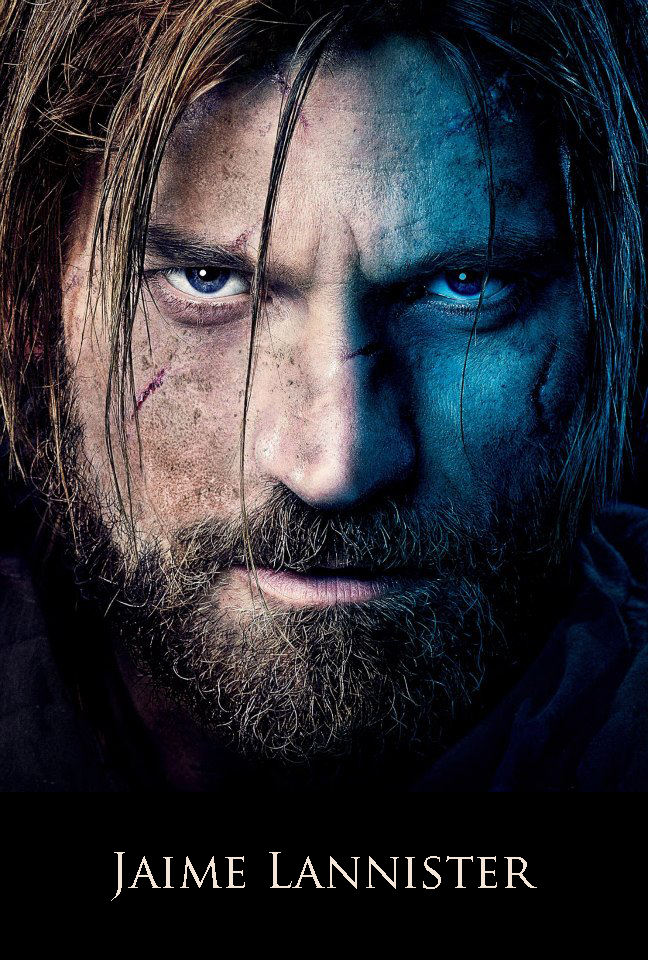

|

|
Jaime Lannister
Jaime Lannister, known as the Kingslayer, is the second child and first-born son of Lord Tywin Lannister of Casterly Rock and his wife Lady Joanna, also of House Lannister. Raised at the age of fifteen to the Kingsguard of the Mad King Aerys II Targaryen, Jaime became the youngest member in the history of the prestigious knightly order.[1] He earned the derogatory nickname "Kingslayer" when he treasonously slew King Aerys near the end of Robert's Rebellion.[2][3] For most of his life, Jaime has had a secretly incestuous relationship with his twin sister, Cersei. He has fathered three children by her: Joffrey, Myrcella, and Tommen, though most of the realm believes their father to be Cersei's husband, King Robert.[4] In A Storm of Swords, Jaime becomes a POV Character. In the TV series he is played by Nikolaj Coster-Waldau.
Character and Appearance
Jaime is a born warrior, and most of his skills lie in the area of martial expertise. He has little interest in politics and court intrigue; by his own admission, Jaime only feels truly alive when fighting or making love. Jaime has the quintessential Lannister look, with bright green eyes and golden hair. He is considered to be extremely handsome, his tall frame complemented with comely features and "a smile that cut like a knife."[2] He dresses in white, like any member of the Kingsguard when on duty, but he also wears his family colors and distinctive armor of his own: gold-plated, with a lion's-head helm at other times.
Early in the series, Jaime comes across as arrogant, amoral, and dishonorable, behavioural traits similar to his sister twin Cersei. However, he is changed by his imprisonment and prolonged exposure to Brienne's stubborn adherence to a code of honour. He sees his adversity as a blank page for him to write a new history, jokingly thinking to himself he might become Gold Hand the Good and noting "this is what justice feels like" even when doling it out to men in Lannister colours.
Because he has done reprehensible acts he has such a bad reputation, everything he says is usually cast in the worst possible light. An offhand joke is taken as a grave threat by others, just because it is spoken by the Kingslayer. And as for honor, Jaime took his Kingsgaurd vows, but when they conflict, he chooses a course of action and follows it to its conclusion, no matter the consequence.
History
Early Years
Jaime is the eldest son of lady Joanna and Lord Tywin Lannister, head of House Lannister, the richest man in the Seven Kingdoms and Lord Paramount of the Westerlands. Jaime and his older twin sister Cersei were inseparable in their early childhood, even going so far as to experiment together in a sexual manner at a young age. During one of these encounters, they were caught by a servant who informed their mother. Jaime's bedchamber was immediately moved to the other side of the castle, and both twins were told never to do anything like that ever again.[6][7]
At age nine, he lost his mother, who died giving birth to Tyrion. Even though Tyrion is a malformed dwarf, Jaime seems to have treated him with kindness and respect unlike Cersei and Tywin.[8]
At the age of eleven, Jaime was sent to Crakehall to squire for old Lord Sumner Crakehall alongside Merrett Frey. Two years later, while still a squire, he won his first tourney melee.[9][10]
Raised to Knighthood
At the age of fifteen, Jaime participated in the campaign against the Kingswood Brotherhood, during which he saved Lord Crakehall from Big Belly Ben and crossed swords with the psychotic Smiling Knight. He was knighted on the battlefield by Ser Arthur Dayne.[9]
On his return to Casterly Rock, he stopped in King's Landing to visit his sister, from whom he had been separated for years.[9] It was there that Cersei told him that Lord Tywin intended to marry him to Lysa Tully, second daughter of Lord Hoster Tully of Riverrun. Cersei suggested that Jaime become a member of the Kingsguard instead, replacing the recently deceased Ser Harlan Grandison, to be close to her and free himself of the unwanted marriage to Lysa. After a night of passionate sex, he gave his consent to Cersei's plan, although they both expected that their father would be opposed to it. She made the necessary arrangements over the next month and Jaime received news in Casterly Rock that he had been chosen for the Kingsguard.[9]
A moon's turn later, Jaime was raised to the Kingsguard by Lord Commander Ser Gerold Hightower in a ceremony during the Tourney at Harrenhal, making him the youngest knight ever to be raised to the order.[1] That night, however, King Aerys soured the honor by sending him back to King's Landing to guard Queen Rhaella and Prince Viserys, depriving him of the chance to participate in Lord Whent's tourney. Jaime realized then that the King had only chosen him for the Kingsguard as a slight against Lord Tywin, of whom Aerys was insanely jealous, to rob him of his heir.[11] Furthermore, the plan failed to bring Jaime and Cersei closer together, as they had intended. Lord Tywin, furious at the turn of events, used a pretext to resign as Hand and returned with Cersei to Casterly Rock. Jaime remained at court, guarding the King.[9]
Kingsguard
During Jaime's time in the Kingsguard, Aerys's growing insanity and attendant cruelty became more and more apparent, and Jaime found himself conflicted and troubled by many of the King's actions. One night, he and Ser Jon Darry stood guard outside Queen Rhaella's bedchamber while Aerys raped and ravaged her. Jaime commented to Darry that they were sworn to protect the Queen as well, to which Darry replied "We are, but not from him."[1] He had a similar reaction to the execution of Brandon and Lord Rickard Stark, and was reminded by Ser Gerold Hightower that he swore a vow to guard the king, not to judge him.[12] Jaime coped with much of Aerys's cruelty by "going away inside", advice he would later pass on to Brienne, when Vargo Hoat's men were considering raping her, and to his son, Tommen when the boy is upset by the smell of Tywin rotting. He genuinely believes this advice, as a way to deal with a harsh reality and making an appalling task tolerable.[13]
As Robert's Rebellion grew, Aerys refused to let Jaime join the royal army, instead keeping him in King's Landing to be used as a potential hostage against Lord Tywin, who had yet to choose a side in the conflict. Aerys appointed several Hands throughout the war, but never invited Tywin to take up his old office. Eventually Jaime was the only White Cloak in the capital.
After the Battle of the Bells, it became apparent to Aerys that the rebellion might be successful and that King's Landing might be lost. Aerys devised a plan with the help of his chief pyromancers that involved placing caches of wildfire all throughout the city. The plan was to burn the entire city to the ground rather than lose it to Robert. His new Hand, Lord Qarlton Chelsted, who had been elevated to the position after the exile of both previous Hands (Lord Owen Merryweather and Jon Connington), confronted Aerys about his plan, removing his chain of office in protest and flinging it to the floor. For that, Aerys burned him alive, and raised his favorite pyromancer Rossart to the Handship. All the while, Jaime guarded the King, blankly observing the details of his plan and keeping his secrets.[3]
When Prince Rhaegar left the Red Keep to face the rebels on the Trident, Jaime begged Rhaegar to take him along and let Ser Barristan Selmy or Ser Jon Darry protect the king for once. Rhaegar refused the suggestion, admitting that King Aerys wanted to keep Jaime close as he was afraid of Tywin Lannister more than anyone else. However, Rhaegar promised an angry and disappointed Jaime that changes would be made when he returned from the battlefield.[14] But Rhaegar was killed in the Battle of the Trident and the defeat of his army all but decided the outcome of the war in favour of a rebel victory. Aerys had his pregnant queen and son Viserys Targaryen sent to Dragonstone.
The Kingslayer
|